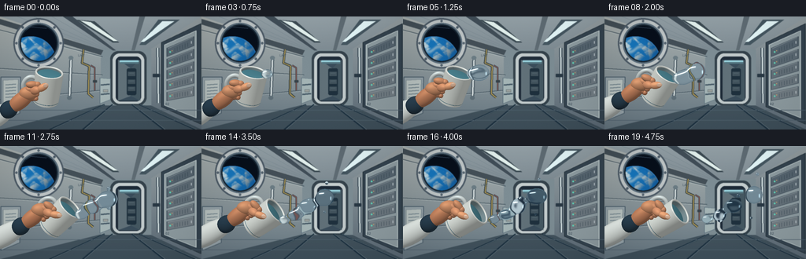
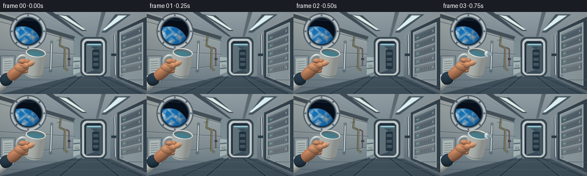

CODING AGENTS AS PIXEL WORLD MODELS
traex/GPT-6.1-Sol · phygen_001
点击播放 · 原生 RGB 像素
逐轮保存的候选
回放视频、检查图与代码变化。
每份候选均可单独播放。实际图片检查记录在下方工具轨迹中。
候选 01播放与检查图
点击播放 · 原生 RGB 像素


展开代码变化
--- 上一保存版本
+++ 本次保存版本
@@ -0,0 +1,453 @@
+"""Procedural, supersampled RGB animation of a microgravity water pour.
+Only numpy, PIL and custom geometry/shading are used.
+"""
+import math
+from pathlib import Path
+import numpy as np
+from PIL import Image, ImageDraw, ImageFont, ImageFilter
+from artifact_io import save
+
+ROOT=Path(__file__).resolve().parent
+W,H,S=256,144,3
+SW,SH=W*S,H*S
+rng=np.random.default_rng(81)
+
+def polygon(im, pts, color, outline=None, width=1):
+ d=ImageDraw.Draw(im)
+ q=[(round(x*S),round(y*S)) for x,y in pts]
+ d.polygon(q,fill=color)
+ if outline: d.line(q+[q[0]],fill=outline,width=max(1,round(width*S)),joint='curve')
+def line(im, pts, color, width=1):
+ ImageDraw.Draw(im).line([(int(x*S),int(y*S)) for x,y in pts],fill=color,width=max(1,int(width*S)),joint='curve')
+def rect(im,box,color,outline=None,width=1,radius=0):
+ d=ImageDraw.Draw(im); b=tuple(int(v*S) for v in box)
+ if radius:d.rounded_rectangle(b,radius=radius*S,fill=color,outline=outline,width=max(1,int(width*S)))
+ else:d.rectangle(b,fill=color,outline=outline,width=max(1,int(width*S)))
+def ellipse(im,box,color,outline=None,width=1):
+ ImageDraw.Draw(im).ellipse(tuple(int(v*S) for v in box),fill=color,outline=outline,width=max(1,int(width*S)))
+def txt(im,p,text,color,size=5):
+ try: f=ImageFont.truetype('DejaVuSans.ttf',size*S)
+ except OSError: f=ImageFont.load_default()
+ ImageDraw.Draw(im).text((int(p[0]*S),int(p[1]*S)),text,fill=color,font=f)
+
+def gradient_poly(im,pts,top,bottom):
+ mask=Image.new('L',(SW,SH)); polygon(mask,pts,255)
+ y=np.arange(SH,dtype=np.float32)[:,None,None]/SH
+ arr=np.repeat(np.array(top)[None,None,:]*(1-y)+np.array(bottom)[None,None,:]*y,SW,axis=1)
+ lay=Image.fromarray(np.uint8(arr))
+ im.paste(lay,(0,0),mask)
+
+
+def make_background():
+ yy,xx=np.mgrid[0:SH,0:SW]; xx=xx/S; yy=yy/S
+ base=np.zeros((SH,SW,3),float); base[:]=(83,96,105)
+ im=Image.fromarray(base.astype('uint8'))
+ # A compact pressurised science module, with converging structural lines.
+ gradient_poly(im,[(0,0),(256,0),(189,43),(130,43)],(150,163,169),(72,85,96))
+ gradient_poly(im,[(0,0),(130,43),(130,112),(0,144)],(174,181,179),(102,119,130))
+ gradient_poly(im,[(256,0),(189,43),(189,112),(256,144)],(153,163,166),(91,106,118))
+ gradient_poly(im,[(0,144),(130,112),(189,112),(256,144)],(80,94,103),(63,80,91))
+ rect(im,(128,42,192,113),(125,141,148))
+ # Back hatch, recessed to suggest a second module behind the station cabin.
+ rect(im,(140,44,186,113),(53,67,76),radius=10)
+ rect(im,(143,47,183,111),(195,204,205),radius=9)
+ rect(im,(147,51,179,108),(30,43,56),radius=6)
+ rect(im,(150,55,178,107),(58,77,91),radius=3)
+ polygon(im,[(150,55),(166,66),(166,101),(150,107)],(97,113,121))
+ polygon(im,[(178,55),(166,66),(166,101),(178,107)],(69,88,98))
+ rect(im,(161,66,173,100),(31,49,62),radius=2)
+ for y in [70,80,89]:
+ rect(im,(162,y,172,y+6),(66,83,93),outline=(27,42,54),width=.5)
+ line(im,[(164,y+2),(170,y+2)],(104,123,131),.5)
+ rect(im,(152,56,176,58),(159,218,228),radius=.6)
+ rect(im,(153,58,176,60),(85,119,130))
+ # Ceiling ribs and luminous overhead strip lights.
+ polygon(im,[(80,0),(92,0),(147,43),(143,43)],(65,78,88))
+ polygon(im,[(177,0),(184,0),(171,43),(167,43)],(95,108,116))
+ polygon(im,[(0,3),(0,10),(128,49),(131,43)],(68,80,88))
+ polygon(im,[(97,4),(120,6),(151,33),(143,33)],(60,75,83))
+ polygon(im,[(102,5),(115,7),(149,31),(144,31)],(227,241,238))
+ polygon(im,[(201,4),(228,4),(185,36),(177,36)],(69,87,97))
+ polygon(im,[(206,6),(221,6),(183,32),(179,32)],(229,248,250))
+ for a in [22,43,66]:
+ line(im,[(a,0),(132+(a/100)*12,42)],(113,130,139),.6)
+ # Left wall seams and secured white equipment panels.
+ for y in [17,66,106]:
+ line(im,[(0,y),(130,43+(y/144)*69)],(59,76,87),1)
+ line(im,[(0,y+1),(129,44+(y/144)*69)],(193,204,203),.55)
+ polygon(im,[(1,77),(26,77),(25,123),(1,133)],(150,163,169),outline=(72,91,104),width=1)
+ polygon(im,[(4,81),(23,80),(22,117),(4,124)],(186,196,194),outline=(113,130,137),width=.5)
+ for y in [87,91,95,99,103]:
+ line(im,[(7,y),(20,y-1)],(81,102,116),1)
+ rect(im,(7,110,18,114),(55,69,78),radius=.4)
+ ellipse(im,(9,110,11,112),(161,219,152))
+ # Cabling, a wall-mounted hand rail, clips and tiny service inscriptions.
+ line(im,[(106,42),(104,59),(113,63),(112,98),(118,103)],(45,57,63),3.3)
+ line(im,[(106,42),(104,59),(113,63),(112,98),(118,103)],(176,154,87),1.4)
+ line(im,[(115,62),(120,65),(120,94)],(47,64,76),2)
+ line(im,[(115,62),(120,65),(120,94)],(183,98,79),.8)
+ rect(im,(118,81,123,84),(55,66,73),radius=.6)
+ line(im,[(90,52),(88,103)],(58,74,84),4)
+ line(im,[(90,52),(88,103)],(213,222,222),2.1)
+ ellipse(im,(87,50,93,55),(107,124,132))
+ ellipse(im,(85,101,91,106),(95,111,120))
+ txt(im,(99,47),'LAB', (71,90,101),4)
+ # Window with machined, bolted concentric frame.
+ cx,cy=49,34
+ ellipse(im,(17,2,81,66),(77,91,103))
+ ellipse(im,(19,4,79,64),(192,199,200))
+ ellipse(im,(23,8,75,60),(89,108,122))
+ ellipse(im,(25,10,73,58),(21,36,49))
+ rad=22.4
+ inside=(xx-cx)**2+(yy-cy)**2<rad**2
+ earthx,earthy,er=39,57,32
+ dx=(xx-earthx)/er; dy=(yy-earthy)/er
+ e2=dx*dx+dy*dy; earth=e2<1
+ noise=np.zeros_like(xx)
+ # Continuous, unlearned clouds and land patterns on a curved planet.
+ for k in range(1,7):
+ noise += (np.sin(dx*(9*k)+np.sin(dy*7*k+0.6*k)*1.2+k)*np.cos(dy*(8*k)-dx*2*k+1.4*k))/(k**1.18)
+ ns=np.sqrt(np.maximum(0,1-e2))
+ light=np.clip(.31+.69*(-dx*.31-dy*.65+ns*.62),.18,1)
+ ocean=np.stack([14+9*light,66+56*light,122+72*light],axis=-1)
+ land=np.clip((noise-.28)*1.5,0,1)*(dy>.0)
+ landcolor=np.stack([84*light+24,100*light+36,77*light+26],axis=-1)
+ ocean=ocean*(1-land[...,None])+landcolor*land[...,None]
+ cloud=np.clip((noise+.18)*.87,0,1)*np.clip(ns*2,0,1)
+ # Long streaks of white cloud wrap across the horizon.
+ cloud=np.maximum(cloud,np.exp(-((dy+.48+.10*np.sin(dx*8))/.08)**2)*.65)
+ ocean=ocean*(1-cloud[...,None]*.85)+(np.array([229,240,238])*light[...,None])*cloud[...,None]*.85
+ atmosphere=np.clip((e2-.89)/.1,0,1)
+ ocean=ocean*(1-atmosphere[...,None]*.45)+np.array([63,156,238])*atmosphere[...,None]*.45
+ arr=np.array(im).astype(float)
+ space=np.zeros_like(arr); space[:]=(7,15,27)
+ arr[inside]=space[inside]; arr[inside&earth]=ocean[inside&earth]
+ im=Image.fromarray(np.uint8(np.clip(arr,0,255)))
+ for i in range(8):
+ ang=i*math.tau/8
+ px,py=cx+28.2*math.cos(ang),cy+28.2*math.sin(ang)
+ ellipse(im,(px-1.4,py-1.4,px+1.4,py+1.4),(67,83,96))
+ line(im,[(px-.7,py-.3),(px+.7,py+.3)],(177,189,197),.45)
+ # Faint window reflection.
+ line(im,[(33,17),(39,13),(59,15)],(100,132,158),.6)
+ # Right equipment racks fitted flush to the hull, in perspective.
+ polygon(im,[(205,33),(255,9),(255,137),(205,115)],(53,68,80),outline=(39,53,62),width=1)
+ polygon(im,[(209,36),(249,18),(249,129),(209,113)],(143,157,162),outline=(198,211,211),width=1)
+ for j in range(5):
+ ya=40+j*14.1; yb=ya+11
+ rise=(j-2)*1.8
+ pts=[(212,ya),(246,ya-11+rise),(246,yb-10+rise),(212,yb)]
+ polygon(im,pts,(86+7*j,101+6*j,112+5*j),outline=(41,57,70),width=.7)
+ line(im,[(213,ya+.8),(245,ya-9.8+rise)],(194,204,205),.6)
+ # switches, green pilot lights, black vents
+ for k in range(6):
+ xx1=222+k*3.3; off=(xx1-212)/34*(-10+rise)
+ line(im,[(xx1,ya+4+off),(xx1,yb-2+off)],(39,56,68),.65)
+ ellipse(im,(215,ya+4,217,ya+6),(100,217,186))
+ ellipse(im,(218,ya+3,219,ya+4),(217,170,102))
+ line(im,[(243,ya-5+rise),(243,yb-13+rise)],(197,207,212),1)
+ line(im,[(200,40),(201,110)],(44,61,74),4)
+ line(im,[(200,40),(201,110)],(205,217,219),2)
+ rect(im,(194,73,203,77),(41,57,69),radius=.5)
+ txt(im,(210,109),'02', (45,64,77),4)
+ # Midground stowage and straps.
+ polygon(im,[(127,78),(140,79),(140,106),(127,111)],(164,180,181),outline=(82,103,116),width=.5)
+ for y in [87,99]: line(im,[(128,y),(139,y-1)],(68,88,101),2)
+ rect(im,(131,93,137,96),(155,161,157),outline=(63,81,91),width=.5)
+ # Foreground deck frame and two parallel rails.
+ for x in [63,105,208,248]:
+ line(im,[(x,144),(155+(x-155)*.24,112)],(30,50,65),2)
+ line(im,[(x+2,144),(156+(x-155)*.24,112)],(143,159,165),.6)
+ for y in [119,132]:line(im,[(0,y),(256,y)],(79,97,110),.7)
+ # A subtle lens falloff and slight depth-of-field separate the foreground.
+ im=im.filter(ImageFilter.GaussianBlur(.38*S))
+ arr=np.array(im,dtype=float)
+ vig=1-.14*((xx-132)/170)**2-.09*((yy-66)/110)**2
+ arr*=vig[...,None]
+ grain=rng.normal(0,.48,(SH,SW,1));arr+=grain
+ return np.clip(arr,0,255).astype(np.float32)
+
+BG=make_background()
+
+# Tiny independent rasterizer, using an orthographic close-up camera.
+LIGHT=np.array([-.43,-.64,.635]); LIGHT/=np.linalg.norm(LIGHT)
+LIGHT2=np.array([.7,-.05,.7]); LIGHT2/=np.linalg.norm(LIGHT2)
+
+def shading(norm,color,kind='ceramic'):
+ n=norm/np.maximum(np.linalg.norm(norm,axis=-1,keepdims=True),1e-6)
+ lam=np.maximum(0,n@LIGHT); fill=np.maximum(0,n@LIGHT2)
+ if kind=='skin':
+ value=.50+.49*lam+.13*fill
+ c=np.array(color)*value[...,None]
+ c+=np.maximum(0,n@np.array([-.23,-.32,.919]))[...,None]**24*np.array([20,17,12])
+ c+=np.maximum(0,-n[...,1])[...,None]*np.array([7,3,1])
+ elif kind=='cloth':
+ value=.46+.46*lam+.16*fill
+ c=np.array(color)*value[...,None]
+ elif kind=='metal':
+ value=.36+.52*lam+.27*fill
+ c=np.array(color)*value[...,None]
+ band=np.exp(-((n[...,0]+.29)/.13)**2)*np.maximum(n[...,2],0)
+ c+=band[...,None]*np.array([67,78,82])
+ else:
+ value=.49+.44*lam+.15*fill
+ c=np.array(color)*value[...,None]
+ half=(LIGHT+np.array([0,0,1.])); half/=np.linalg.norm(half)
+ spec=np.maximum(n@half,0)**55
+ c+=spec[...,None]*np.array([39,45,46])
+ return np.clip(c,0,255)
+
+class Renderer:
+ def __init__(self):
+ self.rgb=BG.copy();self.depth=np.full((SH,SW),-1000.,np.float32)
+ def tri(self,vs,ns,col,kind):
+ v=np.asarray(vs); n=np.asarray(ns)
+ p=v[:,:2]*S
+ xmin=max(0,int(np.floor(p[:,0].min()))); xmax=min(SW-1,int(np.ceil(p[:,0].max())))
+ ymin=max(0,int(np.floor(p[:,1].min()))); ymax=min(SH-1,int(np.ceil(p[:,1].max())))
+ if xmin>xmax or ymin>ymax:return
+ den=(p[1,1]-p[2,1])*(p[0,0]-p[2,0])+(p[2,0]-p[1,0])*(p[0,1]-p[2,1])
+ if abs(den)<1e-6:return
+ yy,xx=np.mgrid[ymin:ymax+1,xmin:xmax+1];xx=xx+.5;yy=yy+.5
+ a=((p[1,1]-p[2,1])*(xx-p[2,0])+(p[2,0]-p[1,0])*(yy-p[2,1]))/den
+ b=((p[2,1]-p[0,1])*(xx-p[2,0])+(p[0,0]-p[2,0])*(yy-p[2,1]))/den
+ c=1-a-b
+ z=a*v[0,2]+b*v[1,2]+c*v[2,2]
+ dep=self.depth[ymin:ymax+1,xmin:xmax+1]
+ mask=(a>=-.0001)&(b>=-.0001)&(c>=-.0001)&(z>dep)
+ if not mask.any():return
+ norms=a[...,None]*n[0]+b[...,None]*n[1]+c[...,None]*n[2]
+ colors=shading(norms,col,kind)
+ dest=self.rgb[ymin:ymax+1,xmin:xmax+1];dest[mask]=colors[mask];dep[mask]=z[mask]
+ def mesh(self,vertices,normals,color,kind='ceramic',wrap=True):
+ m,n=vertices.shape[:2]
+ for j in range(m-1):
+ for i in range(n if wrap else n-1):
+ k=(i+1)%n
+ self.tri([vertices[j,i],vertices[j+1,i],vertices[j+1,k]],[normals[j,i],normals[j+1,i],normals[j+1,k]],color,kind)
+ self.tri([vertices[j,i],vertices[j+1,k],vertices[j,k]],[normals[j,i],normals[j+1,k],normals[j,k]],color,kind)
+ def ellipsoid(self,center,radii,rot,color,kind='skin'):
+ C=np.array(center,float); radii=np.array(radii,float); R=np.array(rot,float)
+ Q=R@np.diag(1/radii**2)@R.T
+ ext=np.sqrt(np.sum((R[:2]*radii)**2,axis=1))
+ xmin=max(0,int((C[0]-ext[0])*S)-1); xmax=min(SW,int((C[0]+ext[0])*S)+2)
+ ymin=max(0,int((C[1]-ext[1])*S)-1); ymax=min(SH,int((C[1]+ext[1])*S)+2)
+ if xmin>=xmax or ymin>=ymax:return
+ yy,xx=np.mgrid[ymin:ymax,xmin:xmax]; dx=(xx+.5)/S-C[0];dy=(yy+.5)/S-C[1]
+ a=Q[2,2]; b=2*(Q[0,2]*dx+Q[1,2]*dy);c=Q[0,0]*dx**2+2*Q[0,1]*dx*dy+Q[1,1]*dy**2-1
+ disc=b*b-4*a*c;dz=(-b+np.sqrt(np.maximum(disc,0)))/(2*a);z=C[2]+dz
+ dep=self.depth[ymin:ymax,xmin:xmax]; mask=(disc>0)&(z>dep)
+ if not mask.any():return
+ ns=np.stack([dx,dy,dz],axis=-1)@Q
+ colors=shading(ns,color,kind)
+ if kind=='cloth':
+ weave=.99+.012*np.sin(xx*math.pi*.8)*np.sin(yy*math.pi*.65)
+ colors*=weave[...,None]
+ dest=self.rgb[ymin:ymax,xmin:xmax];dest[mask]=colors[mask];dep[mask]=z[mask]
+ def capsule(self,a,b,width,depth,color,kind='skin'):
+ a=np.array(a,float);b=np.array(b,float);v=b-a;long=np.linalg.norm(v);v/=long
+ side=np.cross(v,[0,0,1.]);side/=np.linalg.norm(side)
+ back=np.cross(v,side)
+ rot=np.column_stack([v,side,back])
+ self.ellipsoid((a+b)/2,(long*.5+width*.45,width,depth),rot,color,kind)
+
+def pose(t):
+ f=np.clip(t/4.1,0,1);f=f*f*(3-2*f)
+ theta=math.radians(7+51*f)
+ u=np.array([.902*math.sin(theta),-.902*math.cos(theta),.432])
+ e=np.array([math.cos(theta),math.sin(theta),0.])
+ v=np.cross(u,e)
+ B=np.array([58+5*f,110-6*f,8.])
+ return B,u,e,v,theta
+
+def mug(r,t):
+ B,u,e,v,th=pose(t); angles=np.linspace(0,math.tau,96,endpoint=False)
+ radials=np.cos(angles)[:,None]*e+np.sin(angles)[:,None]*v
+ # Deep handle, a loop attached to the far side of the ceramic body.
+ center=B+u*21-e*21
+ a=np.linspace(0,math.tau,66,endpoint=False); b=np.linspace(0,math.tau,12,endpoint=True)
+ verts=[]; norms=[]
+ for beta in b:
+ radial=np.cos(a)[:,None]*e+np.sin(a)[:,None]*u
+ curve=center+np.cos(a)[:,None]*e*10+np.sin(a)[:,None]*u*13
+ normal=radial*math.cos(beta)+v*math.sin(beta)
+ verts.append(curve+normal*2.8);norms.append(normal)
+ r.mesh(np.array(verts),np.array(norms),(210,220,219))
+ # Tapered porcelain body and subtly rounded base.
+ hs=[0,1.3,3,37,41.6,43]; rs=[14.1,15.6,16.2,18.0,18.1,17.7]
+ verts=np.array([B+u*h+radials*rr for h,rr in zip(hs,rs)])
+ normals=np.repeat(radials[None,:,:],len(hs),axis=0)
+ r.mesh(verts,normals,(226,232,226))
+ # Underneath is a slightly darker foot.
+ verts=np.array([B-u*.5+radials*12.5,B+u*.4+radials*14.5])
+ r.mesh(verts,np.repeat(radials[None,:,:],2,axis=0),(143,158,163))
+ # Two understated blue-grey bands around the base.
+ for h in [3.8,5.5]:
+ verts=np.array([B+u*h+radials*16.3,B+u*(h+.55)+radials*16.35])
+ r.mesh(verts,np.repeat(radials[None,:,:],2,axis=0),(67,111,130))
+ # Inner cup walls.
+ verts=np.array([B+u*31+radials*15.7,B+u*42.6+radials*15.8])
+ r.mesh(verts,-np.repeat(radials[None,:,:],2,axis=0),(133,156,161))
+ # The still-contained water meniscus loses volume as water is released.
+ rem=max(.08,1-t/4.0)
+ h=35+5*rem
+ rings=np.linspace(0,1,10)
+ vv=[];nn=[]
+ for rr in rings:
+ vv.append(B+u*(h+1.2*(1-rr*rr))+radials*(15.45*rr))
+ nn.append(np.tile(u,(len(angles),1))*.9+radials*(rr*.12))
+ r.mesh(np.array(vv),np.array(nn),(82,141,156),'metal')
+ # Thick glazed rounded lip, with distinct inner and outer contours.
+ verts=[]; norms=[]
+ for phi in np.linspace(0,math.tau,13):
+ normal=radials*math.cos(phi)+u*math.sin(phi)
+ verts.append(B+u*42.4+radials*16.8+normal*1.25)
+ norms.append(normal)
+ r.mesh(np.array(verts),np.array(norms),(231,236,231))
+ return B,u,e,v
+
+def draw_hand(r,t):
+ B,u,e,v,th=pose(t)
+ P=B+u*9-e*24+np.array([0,0,25])
+ wrist=P+np.array([-20,16,-3])
+ # Soft padded sleeve and ribbed dark cuff, partly out of view.
+ r.capsule(wrist+[-49,29,-9],wrist+[-1,2,-4],13.4,9,(224,231,227),'cloth')
+ r.capsule(wrist+[-10,8,0],wrist+[2,-1,0],11,8,(42,64,80),'cloth')
+ # Palm and heel of the bare hand, in front of the handle.
+ r.capsule(wrist+[-1,2,2],P+[3,-1,4],10.0,7.2,(187,125,91))
+ r.ellipsoid(P+[1,-1,5],(12,9,7),np.eye(3),(199,139,102))
+ # Fingers curling around the handle and left wall of the cup.
+ for j,(h,w) in enumerate([(24,4.7),(17.2,4.6),(10.5,4.2),(4.3,3.7)]):
+ touch=B+u*h-e*13.7+np.array([0,0,30])
+ knuckle=B+u*(h-1.7)-e*23.0+np.array([0,0,30.5])
+ r.capsule(knuckle-e*3,touch,w,4.2,(199-j*3,138-j*3,102-j*2))
+ r.ellipsoid(touch+e*.5,(w*.92,w*.87,3.7),np.column_stack([e,-u,v]),(204-j*3,142-j*3,106-j*2))
+ # Short creases at the bent knuckles, shaded into the flesh.
+ # Thumb crossing the foreground body diagonally. Its flat pale nail is visible.
+ root=P+u*5+e*5+np.array([0,0,8])
+ joint=B+u*17-e*11+np.array([0,0,38])
+ tip=B+u*25-e*1.5+np.array([0,0,37])
+ r.capsule(root,joint,5.4,4.1,(211,146,108))
+ r.capsule(joint,tip,4.6,3.8,(220,156,115))
+ vv=tip-joint; vv/=np.linalg.norm(vv);side=np.cross(vv,[0,0,1]);side/=np.linalg.norm(side);back=np.cross(vv,side)
+ r.ellipsoid(tip-vv*1.2+[0,0,3.5],(3.5,2.65,.65),np.column_stack([vv,side,back]),(219,179,151),'ceramic')
+
+
+def lip(t):
+ B,u,e,v,_=pose(t)
+ return B+u*42.8+e*15.5-v*2.4
+
+
+def water_parts(t):
+ parts=[]
+ # Four slow releases form coherent globules; velocities are constant after
+ # detachment. No downward acceleration exists in the station's microgravity.
+ emissions=[(.62,11.2,26.5,-2.7),(1.55,9.6,23.1,-.5),(2.48,7.7,21.1,1.15),(3.36,5.7,18.9,-.35)]
+ for k,(s,rad,vx,vy) in enumerate(emissions):
+ age=t-s
+ if age<0:continue
+ f=min(1,age/.43); f=f*f*(3-2*f)
+ rad=rad*(.25+.75*f)
+ c=lip(s)+np.array([vx*age,vy*age,12+1.3*age])
+ wob=math.sin(age*4.2+k)*.085
+ ax=rad*(1.06+wob);ay=rad*(.94-wob*.55);az=rad/(ax/rad*ay/rad)
+ parts.append((c,np.array([ax,ay,az])))
+ # A small attached lobe relaxes into the body once surface tension wins.
+ if age<1.3:
+ c2=c+np.array([-rad*.71,rad*.12,1])
+ parts.append((c2,np.array([rad*.60,rad*.43,rad*.50])))
+ # Very short liquid neck while the blob is leaving the mouth.
+ if age<.63:
+ a=lip(t)+[0,0,10]
+ for q in np.linspace(0,1,7):
+ pp=a*(1-q)+c*q
+ rr=2.0+1.8*math.sin(math.pi*q)
+ parts.append((pp,np.array([rr*1.25,rr,rr])))
+ # Tiny capillary satellites pinch off, then continue on straight trajectories.
+ satellites=[(1.36,0,2.05,28,-9.0,(-1,-5,2)),(2.06,0,1.65,24,6,(3,6,1)),(2.91,1,2.2,26,-5,(1,-5,2)),(3.93,2,1.45,20,6,(1,3,3))]
+ for detach,k,rr,vx,vy,offset in satellites:
+ if t<detach:continue
+ s,rad,pvx,pvy=emissions[k]
+ c=lip(s)+np.array([pvx*(detach-s),pvy*(detach-s),14])+np.array(offset)+np.array([vx*(t-detach),vy*(t-detach),.6*(t-detach)])
+ parts.append((c,np.array([rr,rr*.98,rr])))
+ return parts
+
+def sample_rgb(arr,x,y):
+ x=np.clip(x,0,SW-1.001);y=np.clip(y,0,SH-1.001)
+ x0=x.astype(int);y0=y.astype(int);fx=(x-x0)[...,None];fy=(y-y0)[...,None]
+ return arr[y0,x0]*(1-fx)*(1-fy)+arr[y0,x0+1]*fx*(1-fy)+arr[y0+1,x0]*(1-fx)*fy+arr[y0+1,x0+1]*fx*fy
+
+def render_water(r,t):
+ parts=water_parts(t)
+ if not parts:return
+ cs=np.array([c for c,rr in parts]); rs=np.array([rr for c,rr in parts])
+ lo=np.min(cs[:,:2]-rs[:,:2]*1.4,axis=0); hi=np.max(cs[:,:2]+rs[:,:2]*1.4,axis=0)
+ xmin=max(0,int(lo[0]*S));xmax=min(SW,int(hi[0]*S)+2)
+ ymin=max(0,int(lo[1]*S));ymax=min(SH,int(hi[1]*S)+2)
+ yy,xx=np.mgrid[ymin:ymax,xmin:xmax];X=(xx+.5)/S;Y=(yy+.5)/S
+ # Gaussian implicit surface; a smooth union produces a fluid, rather than
+ # polygonal or hard sphere-intersection, silhouette.
+ sig=rs/1.4142
+ xyterms=np.stack([math.e*np.exp(-.5*((X-c[0])**2/s[0]**2+(Y-c[1])**2/s[1]**2)) for c,s in zip(cs,sig)])
+ zlo=float(np.min(cs[:,2]-rs[:,2]*1.4)); zhi=float(np.max(cs[:,2]+rs[:,2]*1.5))
+ # A coarse ray search finds the nearest surface of all detached components.
+ best=np.full(X.shape,zlo-5); hit=np.zeros(X.shape,bool)
+ step=1.3
+ for z in np.arange(zlo,zhi+step,step):
+ vals=np.sum(xyterms*np.exp(-.5*((z-cs[:,2])/sig[:,2])**2)[:,None,None],axis=0)
+ m=vals>=1; best[m]=z; hit|=m
+ if not hit.any():return
+ a=best;b=best+step
+ for j in range(9):
+ z=(a+b)*.5
+ terms=xyterms*np.exp(-.5*((z[None]-cs[:,2,None,None])/sig[:,2,None,None])**2)
+ inside=np.sum(terms,axis=0)>=1
+ a=np.where(inside,z,a);b=np.where(inside,b,z)
+ Z=(a+b)*.5
+ terms=xyterms*np.exp(-.5*((Z[None]-cs[:,2,None,None])/sig[:,2,None,None])**2)
+ nx=np.sum(terms*(X[None]-cs[:,0,None,None])/sig[:,0,None,None]**2,axis=0)
+ ny=np.sum(terms*(Y[None]-cs[:,1,None,None])/sig[:,1,None,None]**2,axis=0)
+ nz=np.sum(terms*(Z[None]-cs[:,2,None,None])/sig[:,2,None,None]**2,axis=0)
+ length=np.maximum(np.sqrt(nx*nx+ny*ny+nz*nz),1e-8);nx/=length;ny/=length;nz/=length
+ nz=np.clip(nz,0,1)
+ # Curved, transparent water refracts the actual station behind it.
+ thick=np.maximum(1,Z-np.sum(terms*cs[:,2,None,None],axis=0)/np.maximum(np.sum(terms,axis=0),1e-4))
+ warp=(3.5+thick*.9)*(.58+.42*nz)
+ under=sample_rgb(r.rgb,xx-nx*warp*S,yy-ny*warp*S)
+ trans=(.96-.27*(1-nz)**3)[...,None]
+ refr=under*trans*np.array([.95,.995,1.025])+np.array([2.4,4.8,6.5])
+ fres=.022+.88*(1-nz)**4.7
+ reflection=np.zeros_like(refr)+np.array([77.,105.,122.])
+ ceiling=np.exp(-((ny+.57)/.21)**2)*np.clip(nz*1.6,0,1)
+ reflection+=ceiling[...,None]*np.array([111,115,113])
+ lower=np.exp(-((ny-.64)/.18)**2)
+ reflection+=lower[...,None]*np.array([9,22,31])
+ color=refr*(1-fres[...,None])+reflection*fres[...,None]
+ # Reflected rectangular station light, with a narrow bright centre and a
+ # larger soft halo. It is constant in the cabin, not painted on each drop.
+ spec=np.exp(-((nx+.37)/.28)**8-((ny+.50+.12*(nx+.37))/.070)**4)*np.clip(nz*2,0,1)
+ halo=np.exp(-((nx+.39)/.24)**2-((ny+.49)/.17)**2)
+ glint=np.exp(-((nx-.64)/.07)**2-((ny-.12)/.23)**4)
+ color+=spec[...,None]*np.array([158,165,163])+halo[...,None]*np.array([28,31,30])+glint[...,None]*np.array([91,106,110])
+ # A cool, very fine rim emphasises the surface without making opaque marbles.
+ rim=(1-nz)**7
+ color+=rim[...,None]*np.array([9,21,29])
+ mask=hit&(Z>r.depth[ymin:ymax,xmin:xmax])
+ dest=r.rgb[ymin:ymax,xmin:xmax];dest[mask]=np.clip(color,0,255)[mask]
+
+
+def generate():
+ frames=[]
+ for i in range(20):
+ t=i/4
+ r=Renderer()
+ mug(r,t)
+ draw_hand(r,t)
+ render_water(r,t)
+ im=Image.fromarray(np.uint8(np.clip(r.rgb,0,255)))
+ im=im.resize((W,H),Image.Resampling.LANCZOS)
+ frames.append(np.asarray(im))
+ print(f'frame {i+1}/20',flush=True)
+ save(np.stack(frames),ROOT)
+
+if __name__=='__main__':generate()
可观测工具轨迹
实际执行的命令与返回图片。
命令 1exit 0
/bin/bash -lc "ls -la && cat prompt.txt && printf '\\n---RULES---\\n' && cat GENERATION_RULES.md && printf '\\n---SPEC---\\n' && cat task_spec.json"
命令 2exit 0
/bin/bash -lc 'cat artifact_io.py'
命令 3exit 0
/bin/bash -lc "python - <<'PY' import numpy, PIL print(numpy.__version__,PIL.__version__) PY"
命令 4exit 0
/bin/bash -lc "cat > generate.py <<'PY'
\"\"\"Procedural, supersampled RGB animation of a microgravity water pour.
Only numpy, PIL and custom geometry/shading are used.
\"\"\"
import math
from pathlib import Path
import numpy as np
from PIL import Image, ImageDraw, ImageFont, ImageFilter
from artifact_io import save
ROOT=Path(__file__).resolve().parent
W,H,S=256,144,3
SW,SH=W*S,H*S
rng=np.random.default_rng(81)
def polygon(im, pts, color, outline=None, width=1):
d=ImageDraw.Draw(im)
q=[(round(x*S),round(y*S)) for x,y in pts]
d.polygon(q,fill=color)
if outline: d.line(q+[q[0]],fill=outline,width=max(1,round(width*S)),joint='curve')
def line(im, pts, color, width=1):
ImageDraw.Draw(im).line([(int(x*S),int(y*S)) for x,y in pts],fill=color,width=max(1,int(width*S)),joint='curve')
def rect(im,box,color,outline=None,width=1,radius=0):
d=ImageDraw.Draw(im); b=tuple(int(v*S) for v in box)
if radius:d.rounded_rectangle(b,radius=radius*S,fill=color,outline=outline,width=max(1,int(width*S)))
else:d.rectangle(b,fill=color,outline=outline,width=max(1,int(width*S)))
def ellipse(im,box,color,outline=None,width=1):
ImageDraw.Draw(im).ellipse(tuple(int(v*S) for v in box),fill=color,outline=outline,width=max(1,int(width*S)))
def txt(im,p,text,color,size=5):
try: f=ImageFont.truetype('DejaVuSans.ttf',size*S)
except OSError: f=ImageFont.load_default()
ImageDraw.Draw(im).text((int(p[0]*S),int(p[1]*S)),text,fill=color,font=f)
def gradient_poly(im,pts,top,bottom):
mask=Image.new('L',(SW,SH)); polygon(mask,pts,255)
y=np.arange(SH,dtype=np.float32)[:,None,None]/SH
arr=np.repeat(np.array(top)[None,None,:]*(1-y)+np.array(bottom)[None,None,:]*y,SW,axis=1)
lay=Image.fromarray(np.uint8(arr))
im.paste(lay,(0,0),mask)
def make_background():
yy,xx=np.mgrid[0:SH,0:SW]; xx=xx/S; yy=yy/S
base=np.zeros((SH,SW,3),float); base[:]=(83,96,105)
im=Image.fromarray(base.astype('uint8'))
# A compact pressurised science module, with converging structural lines.
gradient_poly(im,[(0,0),(256,0),(189,43),(130,43)],(150,163,169),(72,85,96))
gradient_poly(im,[(0,0),(130,43),(130,112),(0,144)],(174,181,179),(102,119,130))
gradient_poly(im,[(256,0),(189,43),(189,112),(256,144)],(153,163,166),(91,106,118))
gradient_poly(im,[(0,144),(130,112),(189,112),(256,144)],(80,94,103),(63,80,91))
rect(im,(128,42,192,113),(125,141,148))
# Back hatch, recessed to suggest a second module behind the station cabin.
rect(im,(140,44,186,113),(53,67,76),radius=10)
rect(im,(143,47,183,111),(195,204,205),radius=9)
rect(im,(147,51,179,108),(30,43,56),radius=6)
rect(im,(150,55,178,107),(58,77,91),radius=3)
polygon(im,[(150,55),(166,66),(166,101),(150,107)],(97,113,121))
polygon(im,[(178,55),(166,66),(166,101),(178,107)],(69,88,98))
rect(im,(161,66,173,100),(31,49,62),radius=2)
for y in [70,80,89]:
rect(im,(162,y,172,y+6),(66,83,93),outline=(27,42,54),width=.5)
line(im,[(164,y+2),(170,y+2)],(104,123,131),.5)
rect(im,(152,56,176,58),(159,218,228),radius=.6)
rect(im,(153,58,176,60),(85,119,130))
# Ceiling ribs and luminous overhead strip lights.
polygon(im,[(80,0),(92,0),(147,43),(143,43)],(65,78,88))
polygon(im,[(177,0),(184,0),(171,43),(167,43)],(95,108,116))
polygon(im,[(0,3),(0,10),(128,49),(131,43)],(68,80,88))
polygon(im,[(97,4),(120,6),(151,33),(143,33)],(60,75,83))
polygon(im,[(102,5),(115,7),(149,31),(144,31)],(227,241,238))
polygon(im,[(201,4),(228,4),(185,36),(177,36)],(69,87,97))
polygon(im,[(206,6),(221,6),(183,32),(179,32)],(229,248,250))
for a in [22,43,66]:
line(im,[(a,0),(132+(a/100)*12,42)],(113,130,139),.6)
# Left wall seams and secured white equipment panels.
for y in [17,66,106]:
line(im,[(0,y),(130,43+(y/144)*69)],(59,76,87),1)
line(im,[(0,y+1),(129,44+(y/144)*69)],(193,204,203),.55)
polygon(im,[(1,77),(26,77),(25,123),(1,133)],(150,163,169),outline=(72,91,104),width=1)
polygon(im,[(4,81),(23,80),(22,117),(4,124)],(186,196,194),outline=(113,130,137),width=.5)
for y in [87,91,95,99,103]:
line(im,[(7,y),(20,y-1)],(81,102,116),1)
rect(im,(7,110,18,114),(55,69,78),radius=.4)
ellipse(im,(9,110,11,112),(161,219,152))
# Cabling, a wall-mounted hand rail, clips and tiny service inscriptions.
line(im,[(106,42),(104,59),(113,63),(112,98),(118,103)],(45,57,63),3.3)
line(im,[(106,42),(104,59),(113,63),(112,98),(118,103)],(176,154,87),1.4)
line(im,[(115,62),(120,65),(120,94)],(47,64,76),2)
line(im,[(115,62),(120,65),(120,94)],(183,98,79),.8)
rect(im,(118,81,123,84),(55,66,73),radius=.6)
line(im,[(90,52),(88,103)],(58,74,84),4)
line(im,[(90,52),(88,103)],(213,222,222),2.1)
ellipse(im,(87,50,93,55),(107,124,132))
ellipse(im,(85,101,91,106),(95,111,120))
txt(im,(99,47),'LAB', (71,90,101),4)
# Window with machined, bolted concentric frame.
cx,cy=49,34
ellipse(im,(17,2,81,66),(77,91,103))
ellipse(im,(19,4,79,64),(192,199,200))
ellipse(im,(23,8,75,60),(89,108,122))
ellipse(im,(25,10,73,58),(21,36,49))
rad=22.4
inside=(xx-cx)**2+(yy-cy)**2<rad**2
earthx,earthy,er=39,57,32
dx=(xx-earthx)/er; dy=(yy-earthy)/er
e2=dx*dx+dy*dy; earth=e2<1
noise=np.zeros_like(xx)
# Continuous, unlearned clouds and land patterns on a curved planet.
for k in range(1,7):
noise += (np.sin(dx*(9*k)+np.sin(dy*7*k+0.6*k)*1.2+k)*np.cos(dy*(8*k)-dx*2*k+1.4*k))/(k**1.18)
ns=np.sqrt(np.maximum(0,1-e2))
light=np.clip(.31+.69*(-dx*.31-dy*.65+ns*.62),.18,1)
ocean=np.stack([14+9*light,66+56*light,122+72*light],axis=-1)
land=np.clip((noise-.28)*1.5,0,1)*(dy>.0)
landcolor=np.stack([84*light+24,100*light+36,77*light+26],axis=-1)
ocean=ocean*(1-land[...,None])+landcolor*land[...,None]
cloud=np.clip((noise+.18)*.87,0,1)*np.clip(ns*2,0,1)
# Long streaks of white cloud wrap across the horizon.
cloud=np.maximum(cloud,np.exp(-((dy+.48+.10*np.sin(dx*8))/.08)**2)*.65)
ocean=ocean*(1-cloud[...,None]*.85)+(np.array([229,240,238])*light[...,None])*cloud[...,None]*.85
atmosphere=np.clip((e2-.89)/.1,0,1)
ocean=ocean*(1-atmosphere[...,None]*.45)+np.array([63,156,238])*atmosphere[...,None]*.45
arr=np.array(im).astype(float)
space=np.zeros_like(arr); space[:]=(7,15,27)
arr[inside]=space[inside]; arr[inside&earth]=ocean[inside&earth]
im=Image.fromarray(np.uint8(np.clip(arr,0,255)))
for i in range(8):
ang=i*math.tau/8
px,py=cx+28.2*math.cos(ang),cy+28.2*math.sin(ang)
ellipse(im,(px-1.4,py-1.4,px+1.4,py+1.4),(67,83,96))
line(im,[(px-.7,py-.3),(px+.7,py+.3)],(177,189,197),.45)
# Faint window reflection.
line(im,[(33,17),(39,13),(59,15)],(100,132,158),.6)
# Right equipment racks fitted flush to the hull, in perspective.
polygon(im,[(205,33),(255,9),(255,137),(205,115)],(53,68,80),outline=(39,53,62),width=1)
polygon(im,[(209,36),(249,18),(249,129),(209,113)],(143,157,162),outline=(198,211,211),width=1)
for j in range(5):
ya=40+j*14.1; yb=ya+11
rise=(j-2)*1.8
pts=[(212,ya),(246,ya-11+rise),(246,yb-10+rise),(212,yb)]
polygon(im,pts,(86+7*j,101+6*j,112+5*j),outline=(41,57,70),width=.7)
line(im,[(213,ya+.8),(245,ya-9.8+rise)],(194,204,205),.6)
# switches, green pilot lights, black vents
for k in range(6):
xx1=222+k*3.3; off=(xx1-212)/34*(-10+rise)
line(im,[(xx1,ya+4+off),(xx1,yb-2+off)],(39,56,68),.65)
ellipse(im,(215,ya+4,217,ya+6),(100,217,186))
ellipse(im,(218,ya+3,219,ya+4),(217,170,102))
line(im,[(243,ya-5+rise),(243,yb-13+rise)],(197,207,212),1)
line(im,[(200,40),(201,110)],(44,61,74),4)
line(im,[(200,40),(201,110)],(205,217,219),2)
rect(im,(194,73,203,77),(41,57,69),radius=.5)
txt(im,(210,109),'02', (45,64,77),4)
# Midground stowage and straps.
polygon(im,[(127,78),(140,79),(140,106),(127,111)],(164,180,181),outline=(82,103,116),width=.5)
for y in [87,99]: line(im,[(128,y),(139,y-1)],(68,88,101),2)
rect(im,(131,93,137,96),(155,161,157),outline=(63,81,91),width=.5)
# Foreground deck frame and two parallel rails.
for x in [63,105,208,248]:
line(im,[(x,144),(155+(x-155)*.24,112)],(30,50,65),2)
line(im,[(x+2,144),(156+(x-155)*.24,112)],(143,159,165),.6)
for y in [119,132]:line(im,[(0,y),(256,y)],(79,97,110),.7)
# A subtle lens falloff and slight depth-of-field separate the foreground.
im=im.filter(ImageFilter.GaussianBlur(.38*S))
arr=np.array(im,dtype=float)
vig=1-.14*((xx-132)/170)**2-.09*((yy-66)/110)**2
arr*=vig[...,None]
grain=rng.normal(0,.48,(SH,SW,1));arr+=grain
return np.clip(arr,0,255).astype(np.float32)
BG=make_background()
# Tiny independent rasterizer, using an orthographic close-up camera.
LIGHT=np.array([-.43,-.64,.635]); LIGHT/=np.linalg.norm(LIGHT)
LIGHT2=np.array([.7,-.05,.7]); LIGHT2/=np.linalg.norm(LIGHT2)
def shading(norm,color,kind='ceramic'):
n=norm/np.maximum(np.linalg.norm(norm,axis=-1,keepdims=True),1e-6)
lam=np.maximum(0,n@LIGHT); fill=np.maximum(0,n@LIGHT2)
if kind=='skin':
value=.50+.49*lam+.13*fill
c=np.array(color)*value[...,None]
c+=np.maximum(0,n@np.array([-.23,-.32,.919]))[...,None]**24*np.array([20,17,12])
c+=np.maximum(0,-n[...,1])[...,None]*np.array([7,3,1])
elif kind=='cloth':
value=.46+.46*lam+.16*fill
c=np.array(color)*value[...,None]
elif kind=='metal':
value=.36+.52*lam+.27*fill
c=np.array(color)*value[...,None]
band=np.exp(-((n[...,0]+.29)/.13)**2)*np.maximum(n[...,2],0)
c+=band[...,None]*np.array([67,78,82])
else:
value=.49+.44*lam+.15*fill
c=np.array(color)*value[...,None]
half=(LIGHT+np.array([0,0,1.])); half/=np.linalg.norm(half)
spec=np.maximum(n@half,0)**55
c+=spec[...,None]*np.array([39,45,46])
return np.clip(c,0,255)
class Renderer:
def __init__(self):
self.rgb=BG.copy();self.depth=np.full((SH,SW),-1000.,np.float32)
def tri(self,vs,ns,col,kind):
v=np.asarray(vs); n=np.asarray(ns)
p=v[:,:2]*S
xmin=max(0,int(np.floor(p[:,0].min()))); xmax=min(SW-1,int(np.ceil(p[:,0].max())))
ymin=max(0,int(np.floor(p[:,1].min()))); ymax=min(SH-1,int(np.ceil(p[:,1].max())))
if xmin>xmax or ymin>ymax:return
den=(p[1,1]-p[2,1])*(p[0,0]-p[2,0])+(p[2,0]-p[1,0])*(p[0,1]-p[2,1])
if abs(den)<1e-6:return
yy,xx=np.mgrid[ymin:ymax+1,xmin:xmax+1];xx=xx+.5;yy=yy+.5
a=((p[1,1]-p[2,1])*(xx-p[2,0])+(p[2,0]-p[1,0])*(yy-p[2,1]))/den
b=((p[2,1]-p[0,1])*(xx-p[2,0])+(p[0,0]-p[2,0])*(yy-p[2,1]))/den
c=1-a-b
z=a*v[0,2]+b*v[1,2]+c*v[2,2]
dep=self.depth[ymin:ymax+1,xmin:xmax+1]
mask=(a>=-.0001)&(b>=-.0001)&(c>=-.0001)&(z>dep)
if not mask.any():return
norms=a[...,None]*n[0]+b[...,None]*n[1]+c[...,None]*n[2]
colors=shading(norms,col,kind)
dest=self.rgb[ymin:ymax+1,xmin:xmax+1];dest[mask]=colors[mask];dep[mask]=z[mask]
def mesh(self,vertices,normals,color,kind='ceramic',wrap=True):
m,n=vertices.shape[:2]
for j in range(m-1):
for i in range(n if wrap else n-1):
k=(i+1)%n
self.tri([vertices[j,i],vertices[j+1,i],vertices[j+1,k]],[normals[j,i],normals[j+1,i],normals[j+1,k]],color,kind)
self.tri([vertices[j,i],vertices[j+1,k],vertices[j,k]],[normals[j,i],normals[j+1,k],normals[j,k]],color,kind)
def ellipsoid(self,center,radii,rot,color,kind='skin'):
C=np.array(center,float); radii=np.array(radii,float); R=np.array(rot,float)
Q=R@np.diag(1/radii**2)@R.T
ext=np.sqrt(np.sum((R[:2]*radii)**2,axis=1))
xmin=max(0,int((C[0]-ext[0])*S)-1); xmax=min(SW,int((C[0]+ext[0])*S)+2)
ymin=max(0,int((C[1]-ext[1])*S)-1); ymax=min(SH,int((C[1]+ext[1])*S)+2)
if xmin>=xmax or ymin>=ymax:return
yy,xx=np.mgrid[ymin:ymax,xmin:xmax]; dx=(xx+.5)/S-C[0];dy=(yy+.5)/S-C[1]
a=Q[2,2]; b=2*(Q[0,2]*dx+Q[1,2]*dy);c=Q[0,0]*dx**2+2*Q[0,1]*dx*dy+Q[1,1]*dy**2-1
disc=b*b-4*a*c;dz=(-b+np.sqrt(np.maximum(disc,0)))/(2*a);z=C[2]+dz
dep=self.depth[ymin:ymax,xmin:xmax]; mask=(disc>0)&(z>dep)
if not mask.any():return
ns=np.stack([dx,dy,dz],axis=-1)@Q
colors=shading(ns,color,kind)
if kind=='cloth':
weave=.99+.012*np.sin(xx*math.pi*.8)*np.sin(yy*math.pi*.65)
colors*=weave[...,None]
dest=self.rgb[ymin:ymax,xmin:xmax];dest[mask]=colors[mask];dep[mask]=z[mask]
def capsule(self,a,b,width,depth,color,kind='skin'):
a=np.array(a,float);b=np.array(b,float);v=b-a;long=np.linalg.norm(v);v/=long
side=np.cross(v,[0,0,1.]);side/=np.linalg.norm(side)
back=np.cross(v,side)
rot=np.column_stack([v,side,back])
self.ellipsoid((a+b)/2,(long*.5+width*.45,width,depth),rot,color,kind)
def pose(t):
f=np.clip(t/4.1,0,1);f=f*f*(3-2*f)
theta=math.radians(7+51*f)
u=np.array([.902*math.sin(theta),-.902*math.cos(theta),.432])
e=np.array([math.cos(theta),math.sin(theta),0.])
v=np.cross(u,e)
B=np.array([58+5*f,110-6*f,8.])
return B,u,e,v,theta
def mug(r,t):
B,u,e,v,th=pose(t); angles=np.linspace(0,math.tau,96,endpoint=False)
radials=np.cos(angles)[:,None]*e+np.sin(angles)[:,None]*v
# Deep handle, a loop attached to the far side of the ceramic body.
center=B+u*21-e*21
a=np.linspace(0,math.tau,66,endpoint=False); b=np.linspace(0,math.tau,12,endpoint=True)
verts=[]; norms=[]
for beta in b:
radial=np.cos(a)[:,None]*e+np.sin(a)[:,None]*u
curve=center+np.cos(a)[:,None]*e*10+np.sin(a)[:,None]*u*13
normal=radial*math.cos(beta)+v*math.sin(beta)
verts.append(curve+normal*2.8);norms.append(normal)
r.mesh(np.array(verts),np.array(norms),(210,220,219))
# Tapered porcelain body and subtly rounded base.
hs=[0,1.3,3,37,41.6,43]; rs=[14.1,15.6,16.2,18.0,18.1,17.7]
verts=np.array([B+u*h+radials*rr for h,rr in zip(hs,rs)])
normals=np.repeat(radials[None,:,:],len(hs),axis=0)
r.mesh(verts,normals,(226,232,226))
# Underneath is a slightly darker foot.
verts=np.array([B-u*.5+radials*12.5,B+u*.4+radials*14.5])
r.mesh(verts,np.repeat(radials[None,:,:],2,axis=0),(143,158,163))
# Two understated blue-grey bands around the base.
for h in [3.8,5.5]:
verts=np.array([B+u*h+radials*16.3,B+u*(h+.55)+radials*16.35])
r.mesh(verts,np.repeat(radials[None,:,:],2,axis=0),(67,111,130))
# Inner cup walls.
verts=np.array([B+u*31+radials*15.7,B+u*42.6+radials*15.8])
r.mesh(verts,-np.repeat(radials[None,:,:],2,axis=0),(133,156,161))
# The still-contained water meniscus loses volume as water is released.
rem=max(.08,1-t/4.0)
h=35+5*rem
rings=np.linspace(0,1,10)
vv=[];nn=[]
for rr in rings:
vv.append(B+u*(h+1.2*(1-rr*rr))+radials*(15.45*rr))
nn.append(np.tile(u,(len(angles),1))*.9+radials*(rr*.12))
r.mesh(np.array(vv),np.array(nn),(82,141,156),'metal')
# Thick glazed rounded lip, with distinct inner and outer contours.
verts=[]; norms=[]
for phi in np.linspace(0,math.tau,13):
normal=radials*math.cos(phi)+u*math.sin(phi)
verts.append(B+u*42.4+radials*16.8+normal*1.25)
norms.append(normal)
r.mesh(np.array(verts),np.array(norms),(231,236,231))
return B,u,e,v
def draw_hand(r,t):
B,u,e,v,th=pose(t)
P=B+u*9-e*24+np.array([0,0,25])
wrist=P+np.array([-20,16,-3])
# Soft padded sleeve and ribbed dark cuff, partly out of view.
r.capsule(wrist+[-49,29,-9],wrist+[-1,2,-4],13.4,9,(224,231,227),'cloth')
r.capsule(wrist+[-10,8,0],wrist+[2,-1,0],11,8,(42,64,80),'cloth')
# Palm and heel of the bare hand, in front of the handle.
r.capsule(wrist+[-1,2,2],P+[3,-1,4],10.0,7.2,(187,125,91))
r.ellipsoid(P+[1,-1,5],(12,9,7),np.eye(3),(199,139,102))
# Fingers curling around the handle and left wall of the cup.
for j,(h,w) in enumerate([(24,4.7),(17.2,4.6),(10.5,4.2),(4.3,3.7)]):
touch=B+u*h-e*13.7+np.array([0,0,30])
knuckle=B+u*(h-1.7)-e*23.0+np.array([0,0,30.5])
r.capsule(knuckle-e*3,touch,w,4.2,(199-j*3,138-j*3,102-j*2))
r.ellipsoid(touch+e*.5,(w*.92,w*.87,3.7),np.column_stack([e,-u,v]),(204-j*3,142-j*3,106-j*2))
# Short creases at the bent knuckles, shaded into the flesh.
# Thumb crossing the foreground body diagonally. Its flat pale nail is visible.
root=P+u*5+e*5+np.array([0,0,8])
joint=B+u*17-e*11+np.array([0,0,38])
tip=B+u*25-e*1.5+np.array([0,0,37])
r.capsule(root,joint,5.4,4.1,(211,146,108))
r.capsule(joint,tip,4.6,3.8,(220,156,115))
vv=tip-joint; vv/=np.linalg.norm(vv);side=np.cross(vv,[0,0,1]);side/=np.linalg.norm(side);back=np.cross(vv,side)
r.ellipsoid(tip-vv*1.2+[0,0,3.5],(3.5,2.65,.65),np.column_stack([vv,side,back]),(219,179,151),'ceramic')
def lip(t):
B,u,e,v,_=pose(t)
return B+u*42.8+e*15.5-v*2.4
def water_parts(t):
parts=[]
# Four slow releases form coherent globules; velocities are constant after
# detachment. No downward acceleration exists in the station's microgravity.
emissions=[(.62,11.2,26.5,-2.7),(1.55,9.6,23.1,-.5),(2.48,7.7,21.1,1.15),(3.36,5.7,18.9,-.35)]
for k,(s,rad,vx,vy) in enumerate(emissions):
age=t-s
if age<0:continue
f=min(1,age/.43); f=f*f*(3-2*f)
rad=rad*(.25+.75*f)
c=lip(s)+np.array([vx*age,vy*age,12+1.3*age])
wob=math.sin(age*4.2+k)*.085
ax=rad*(1.06+wob);ay=rad*(.94-wob*.55);az=rad/(ax/rad*ay/rad)
parts.append((c,np.array([ax,ay,az])))
# A small attached lobe relaxes into the body once surface tension wins.
if age<1.3:
c2=c+np.array([-rad*.71,rad*.12,1])
parts.append((c2,np.array([rad*.60,rad*.43,rad*.50])))
# Very short liquid neck while the blob is leaving the mouth.
if age<.63:
a=lip(t)+[0,0,10]
for q in np.linspace(0,1,7):
pp=a*(1-q)+c*q
rr=2.0+1.8*math.sin(math.pi*q)
parts.append((pp,np.array([rr*1.25,rr,rr])))
# Tiny capillary satellites pinch off, then continue on straight trajectories.
satellites=[(1.36,0,2.05,28,-9.0,(-1,-5,2)),(2.06,0,1.65,24,6,(3,6,1)),(2.91,1,2.2,26,-5,(1,-5,2)),(3.93,2,1.45,20,6,(1,3,3))]
for detach,k,rr,vx,vy,offset in satellites:
if t<detach:continue
s,rad,pvx,pvy=emissions[k]
c=lip(s)+np.array([pvx*(detach-s),pvy*(detach-s),14])+np.array(offset)+np.array([vx*(t-detach),vy*(t-detach),.6*(t-detach)])
parts.append((c,np.array([rr,rr*.98,rr])))
return parts
def sample_rgb(arr,x,y):
x=np.clip(x,0,SW-1.001);y=np.clip(y,0,SH-1.001)
x0=x.astype(int);y0=y.astype(int);fx=(x-x0)[...,None];fy=(y-y0)[...,None]
return arr[y0,x0]*(1-fx)*(1-fy)+arr[y0,x0+1]*fx*(1-fy)+arr[y0+1,x0]*(1-fx)*fy+arr[y0+1,x0+1]*fx*fy
def render_water(r,t):
parts=water_parts(t)
if not parts:return
cs=np.array([c for c,rr in parts]); rs=np.array([rr for c,rr in parts])
lo=np.min(cs[:,:2]-rs[:,:2]*1.4,axis=0); hi=np.max(cs[:,:2]+rs[:,:2]*1.4,axis=0)
xmin=max(0,int(lo[0]*S));xmax=min(SW,int(hi[0]*S)+2)
ymin=max(0,int(lo[1]*S));ymax=min(SH,int(hi[1]*S)+2)
yy,xx=np.mgrid[ymin:ymax,xmin:xmax];X=(xx+.5)/S;Y=(yy+.5)/S
# Gaussian implicit surface; a smooth union produces a fluid, rather than
# polygonal or hard sphere-intersection, silhouette.
sig=rs/1.4142
xyterms=np.stack([math.e*np.exp(-.5*((X-c[0])**2/s[0]**2+(Y-c[1])**2/s[1]**2)) for c,s in zip(cs,sig)])
zlo=float(np.min(cs[:,2]-rs[:,2]*1.4)); zhi=float(np.max(cs[:,2]+rs[:,2]*1.5))
# A coarse ray search finds the nearest surface of all detached components.
best=np.full(X.shape,zlo-5); hit=np.zeros(X.shape,bool)
step=1.3
for z in np.arange(zlo,zhi+step,step):
vals=np.sum(xyterms*np.exp(-.5*((z-cs[:,2])/sig[:,2])**2)[:,None,None],axis=0)
m=vals>=1; best[m]=z; hit|=m
if not hit.any():return
a=best;b=best+step
for j in range(9):
z=(a+b)*.5
terms=xyterms*np.exp(-.5*((z[None]-cs[:,2,None,None])/sig[:,2,None,None])**2)
inside=np.sum(terms,axis=0)>=1
a=np.where(inside,z,a);b=np.where(inside,b,z)
Z=(a+b)*.5
terms=xyterms*np.exp(-.5*((Z[None]-cs[:,2,None,None])/sig[:,2,None,None])**2)
nx=np.sum(terms*(X[None]-cs[:,0,None,None])/sig[:,0,None,None]**2,axis=0)
ny=np.sum(terms*(Y[None]-cs[:,1,None,None])/sig[:,1,None,None]**2,axis=0)
nz=np.sum(terms*(Z[None]-cs[:,2,None,None])/sig[:,2,None,None]**2,axis=0)
length=np.maximum(np.sqrt(nx*nx+ny*ny+nz*nz),1e-8);nx/=length;ny/=length;nz/=length
nz=np.clip(nz,0,1)
# Curved, transparent water refracts the actual station behind it.
thick=np.maximum(1,Z-np.sum(terms*cs[:,2,None,None],axis=0)/np.maximum(np.sum(terms,axis=0),1e-4))
warp=(3.5+thick*.9)*(.58+.42*nz)
under=sample_rgb(r.rgb,xx-nx*warp*S,yy-ny*warp*S)
trans=(.96-.27*(1-nz)**3)[...,None]
refr=under*trans*np.array([.95,.995,1.025])+np.array([2.4,4.8,6.5])
fres=.022+.88*(1-nz)**4.7
reflection=np.zeros_like(refr)+np.array([77.,105.,122.])
ceiling=np.exp(-((ny+.57)/.21)**2)*np.clip(nz*1.6,0,1)
reflection+=ceiling[...,None]*np.array([111,115,113])
lower=np.exp(-((ny-.64)/.18)**2)
reflection+=lower[...,None]*np.array([9,22,31])
color=refr*(1-fres[...,None])+reflection*fres[...,None]
# Reflected rectangular station light, with a narrow bright centre and a
# larger soft halo. It is constant in the cabin, not painted on each drop.
spec=np.exp(-((nx+.37)/.28)**8-((ny+.50+.12*(nx+.37))/.070)**4)*np.clip(nz*2,0,1)
halo=np.exp(-((nx+.39)/.24)**2-((ny+.49)/.17)**2)
glint=np.exp(-((nx-.64)/.07)**2-((ny-.12)/.23)**4)
color+=spec[...,None]*np.array([158,165,163])+halo[...,None]*np.array([28,31,30])+glint[...,None]*np.array([91,106,110])
# A cool, very fine rim emphasises the surface without making opaque marbles.
rim=(1-nz)**7
color+=rim[...,None]*np.array([9,21,29])
mask=hit&(Z>r.depth[ymin:ymax,xmin:xmax])
dest=r.rgb[ymin:ymax,xmin:xmax];dest[mask]=np.clip(color,0,255)[mask]
def generate():
frames=[]
for i in range(20):
t=i/4
r=Renderer()
mug(r,t)
draw_hand(r,t)
render_water(r,t)
im=Image.fromarray(np.uint8(np.clip(r.rgb,0,255)))
im=im.resize((W,H),Image.Resampling.LANCZOS)
frames.append(np.asarray(im))
print(f'frame {i+1}/20',flush=True)
save(np.stack(frames),ROOT)
if __name__=='__main__':generate()
PY
OPENBLAS_NUM_THREADS=1 python generate.py"命令 5exit 0
/bin/bash -lc "python - <<'PY'
from pathlib import Path
import numpy as np
from PIL import Image
p=np.load('pixels.npz')['pixels']
assert p.shape==(144,256,20)
files=sorted(Path('frames').glob('*.png'))
assert len(files)==20
assert all(Image.open(f).size==(256,144) and Image.open(f).mode=='RGB' for f in files)
for f in ['generate.py','pixels.npz','index.html','inspection.png','transition_check.png']:
print(f,Path(f).stat().st_size)
PY"视觉工具实际返回图片 1

保存候选 1 份；完成命令 5 次；可验证图片返回 1 张。原始 API 响应与完整日志保留在本地。